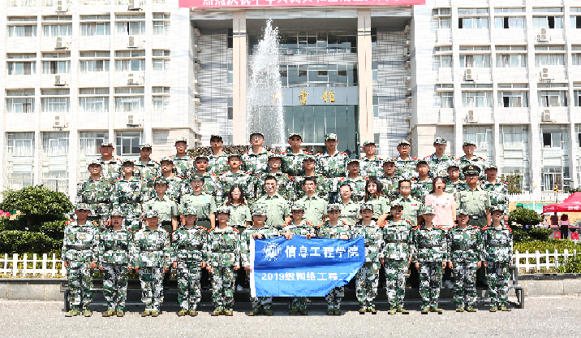

集
体
照
致
坚
持
而
不
放
弃
的
六
十
六
排
作为一名大一新生，我怀揣着激动又紧张的心情进入军训生活。虽只有十七天，我却已经深刻的体会到在炎日照晒下的军事训练的紧张与艰苦；感受到教官们的严肃认真与幽默友好；学习到了如何做一个朝气蓬勃的大学生，要自强自律，自立自信。
在训练场上，一直响起教官们下命令或是指导我们的声音，处处可见身着军装的我们在训练：稍息、立正、跨立……时间紧迫，过程中有动作不熟练或不准确的科目，教官始终耐心指导每个人，大家都尽自己最大的努力去练好。第二天下午训练结束，四个连队进行比拼，虽然还有些许动作不够标准，但也能看出我们在短时间内的进步！
虽然疲惫，但军训的确是加强身体与思想素质的一剂强化剂。即使过程艰辛，我们也仍会用自己饱满的青春热血，继续军训生活，绽放青春异彩。
漂
亮
有
气
势
军训的日子虽苦，却像咖啡一样可以品尝出别样的滋味。我原本认为我并不能抗住考验，它却激活我要坚持到底的信念，胜利终将属于有信念的人。这些天的军姿站立，我知觉的时间已不再是时间，纵然两腿发酸却一身挺直依旧。每次的坚持都会让我感受到自我的超越。有过斜风细雨的洗淋却没有浇灭我炽热的心，有过炎炎夏日的暴晒，却没有像晒黑皮肤一样，打散我的执着。如果没有这种训练，我都不知道片刻的休息都会成为一种奢侈品。
军姿展现的是军人的风采，也展现出的义愤从容之美，坚定之心。“硬骨傲苍穹，笑傲风霜雪”，你会油然而生一股浩然正气横贯长虹。如果青春是原石，那么军训就是刻刀。
也是军训让我体会到了军人的感受，当身边响起《绿色军衣》时，我的眼中蓄满了泪水，我想当兵的人多少个日夜听到这首歌也会黯然落泪吧。他们放弃了家庭的温暖，亲人的怀抱。这不能不说是伟大的奉献，他们是和祖国的星辰一起，熠熠闪耀在穹顶之上。我已经没有理由抱怨生活的枯燥与乏味。每天要过得充实有意义，有益于别人，有益于自己。因为有这样一个群体肩负着比我重十万倍的责任。因为有种生活比我艰苦十万倍。我也应以军人的姿态矗立在他人面前。
当白云与蓝天相遇，白云便多了一份宽广，蓝天又增了一份柔情;当青山与流水相遇，青山便多了一份细腻，流水又增了一份坚毅;
山没有悬崖峭壁就不再险峻，海没有惊涛骇浪就不再壮阔，河没有跌宕起伏就不再壮美，人生没有挫折磨难就不再坚强。梅花如果没有傲立霜雪的勇气，就不会成为残酷冬日里一道靓丽风景；人如果没有坚持到底的毅力，就不会成为紧张军训中的一颗亮星。
我相信—21世纪的精神是一种军人的精神，坚毅刚强，不畏艰难，坚持不懈，永不言弃的精神。国之兴亡，匹夫有责，祖国的希望很大掌握在我们的手中，让我们携起双手，迈出步伐，以坚定的脚步向着创造之路前进吧！
整
齐
划
一